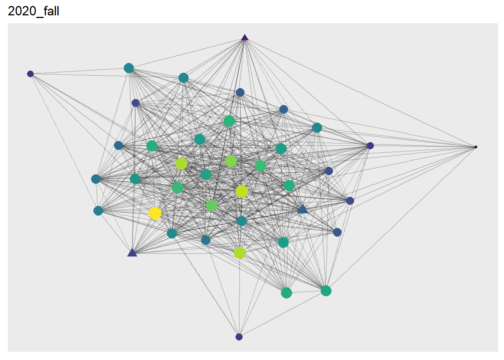
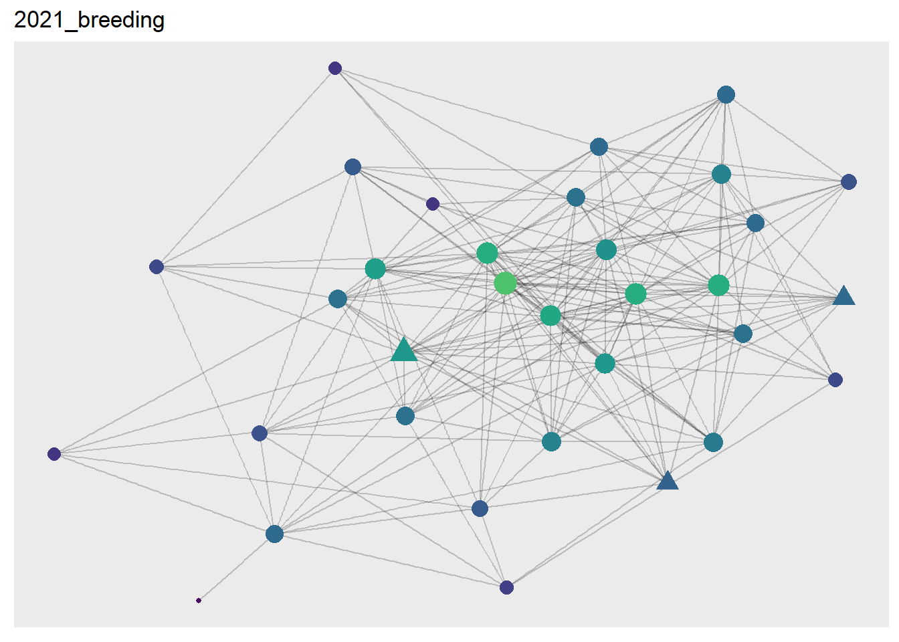
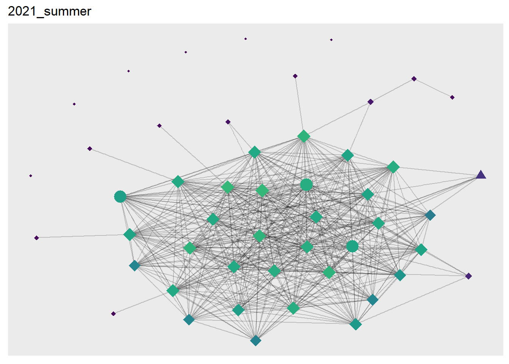
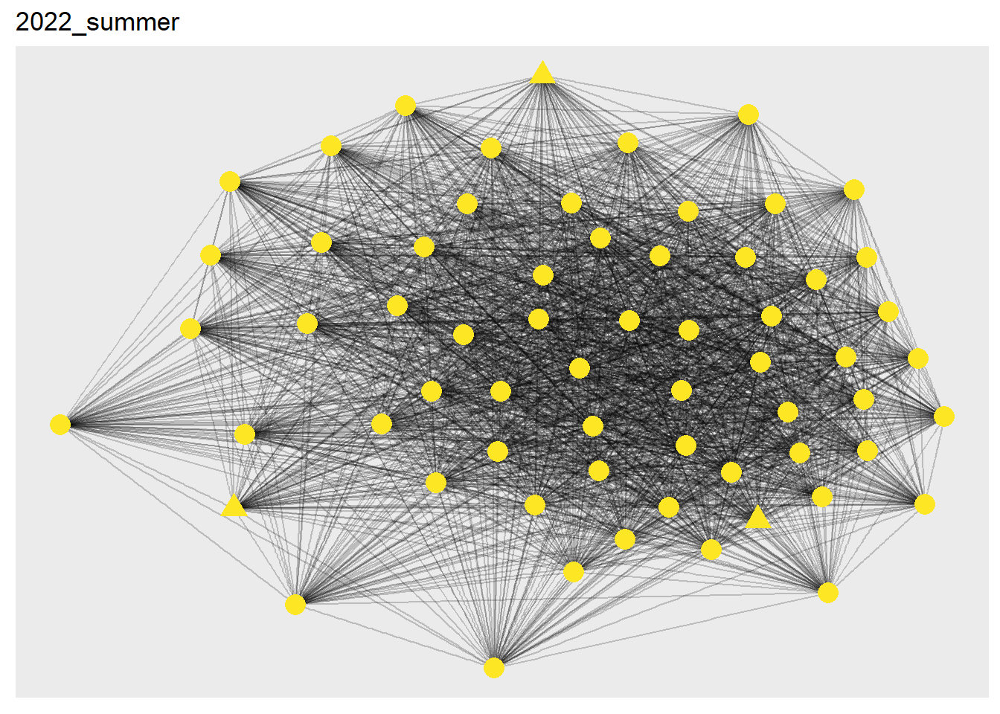

# Network visualizations ----------------------------------------------------------------
# This process only works for the color scaling because we know our minimum degree value is 0 and our maximum degree value is 1. For strength, it's going to be more complicated.
grph_deg <- function(graph, season_name, type){
min <- graph %>% activate(nodes) %>% pull(normDegree) %>% min()
max <- graph %>% activate(nodes) %>% pull(normDegree) %>% max()
g <- graph %>%
ggraph(layout = "fr")+
geom_edge_link(alpha = 0.2)+
geom_node_point(aes(size = normDegree, col = normDegree, shape = dataset))+
# geom_node_text(aes(label = label,
# hjust = -0.2, vjust = 0.1))+
scale_shape_manual(name = "Dataset", values = c(17, 16, 18))+
scale_color_viridis(begin = min, end = max)+
theme(legend.position = "none")+
ggtitle(season_name)
return(g)
}
minstr <- min(info$normStrength)
maxstr <- max(info$normStrength) # XXX CHECK THIS
grph_str <- function(graph, season_name, type){
min <- graph %>% activate(nodes) %>% pull(normStrength) %>% min()
max <- graph %>% activate(nodes) %>% pull(normStrength) %>% max()
g <- graph %>%
ggraph(layout = "fr")+
geom_edge_link(alpha = 0.2)+
geom_node_point(aes(size = normStrength,
col = normStrength*(1/maxstr),
shape = dataset))+
# geom_node_text(aes(label = label,
# hjust = -0.2, vjust = 0.1))+
scale_shape_manual(name = "Dataset", values = c(17, 16, 18))+
scale_color_viridis()+
theme(legend.position = "none")+
ggtitle(season_name)
return(g)
}
grph_str(flightGraphs[[1]], "2020_fall", type = "flight")Warning: Using the `size` aesthetic in this geom was deprecated in ggplot2 3.4.0.
i Please use `linewidth` in the `default_aes` field and elsewhere instead.
grph_deg(flightGraphs[[2]], "2021_breeding", type = "flight")
grph_deg(flightGraphs[[3]], "2021_summer", type = "flight")
grph_deg(roostingGraphs[[6]], "2022_summer", type = "roosting")